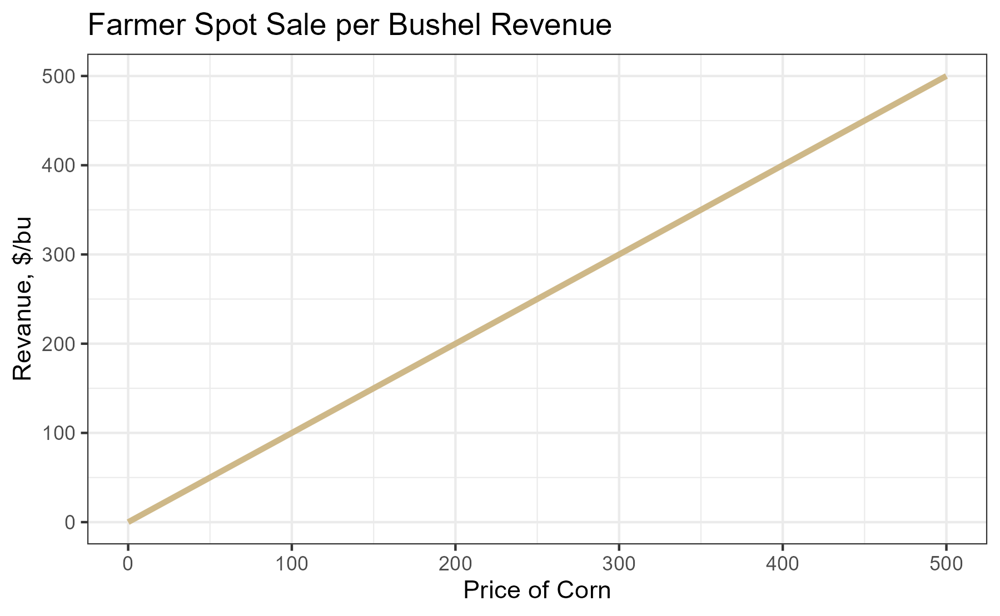
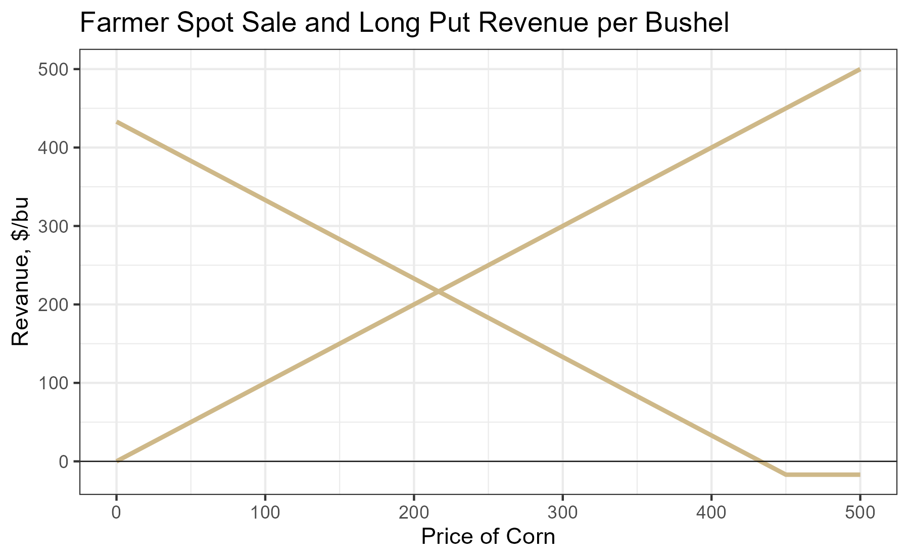
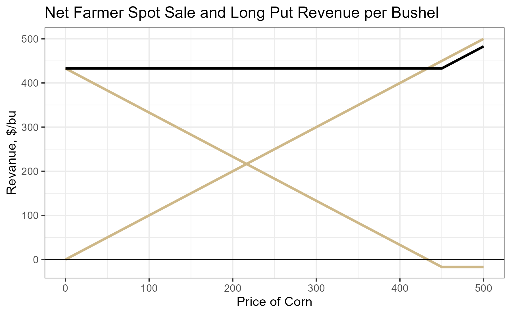
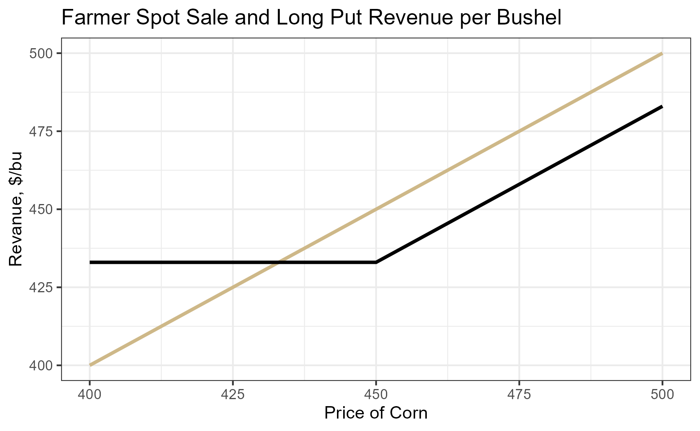
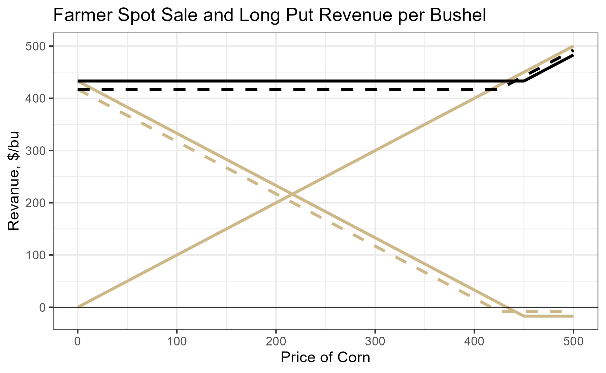
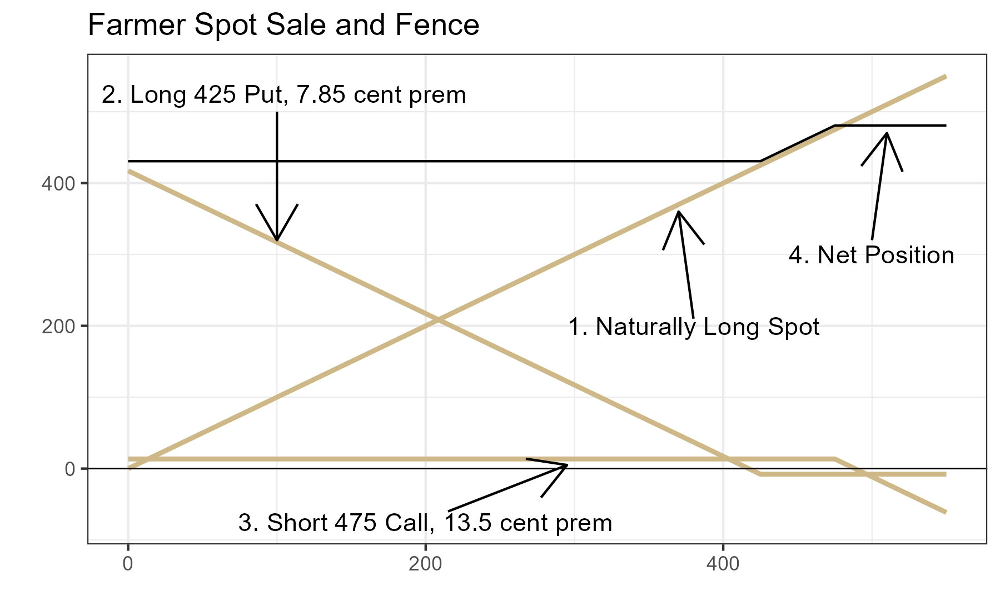
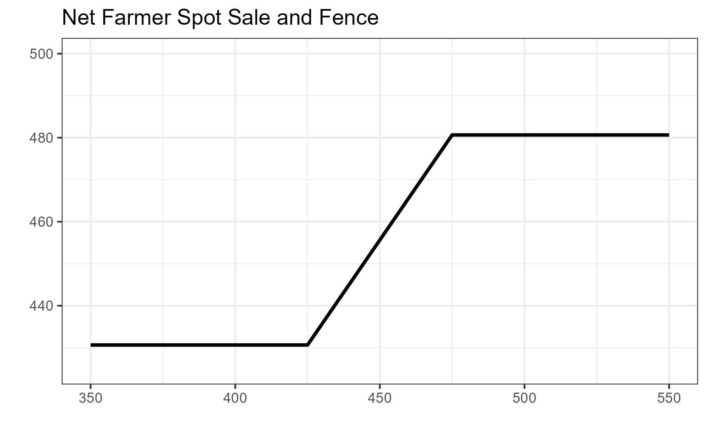

Chapter 7
Protecting Downside Risk While Retaining Upside Potential
Why does a long put option protect from downside risk?
What are the options trades required to lock in a price range?
Which of the strategies described in this chapter require one to maintain margin?
We know from chapter 4 that hedging in the financial sense is an activity designed to generate positive cash flows when the main position is experiencing a drawdown.
A farmer with a crop in the field or in the bin is exposed to price risk and will experience financial loss if crop prices decline. To hedge, they can sell a futures contract. Corn futures prices are highly correlated to the spot price the farmer faces in the local market, so if corn prices decline, the losses in spot sales are offset by gains from the short futures position.
Hedging with futures removes exposure to both downside and upside price movements. By hedging with a put option, a farmer can eliminate downside risk (save for the risk of a falling basis) while retaining benefits from price increases.
To visualize how it works, first recall what a farmer's per bushel revenue looks like as a function of the price of corn. It is simply a 45 degree line radiating from the origin.

Per-bushel spot revenue increases one-for-one with the price of corn
Next, add the payoff at expiration of a long 450 strike put option whose premium is 17 cents per bushel.

Gold: spot revenue | Blue: long 450 put payoff (premium = 17¢/bu)
Adding the spot position and the long put together gives the net position shown by the black line.

Downside risk is capped at the strike of the long put option
Upside potential is preserved, but lowered by the amount of the put option premium
Everywhere the black line is upward sloped, it is lower than the spot revenue by the amount of the put premium
Zooming in reveals that the net position looks a lot like holding a long call option position.

The strike of the long put should be chosen by considering the tradeoff between greater downside protection and premium cost.

Higher premium cost, but greater downside protection. The net position is farther below the spot line, but floor kicks in sooner.
Lower premium cost, so the net position is closer to the spot line. However, there is more downside risk since protection starts at a lower price.
A way to mitigate the cost of buying a put option to protect downside risk is to sell a call option whose strike is above the current market price.
Current market price: 450 cents

Gold lines: individual instrument payoffs | Black line: net position from all three
No downside risk — you are protected by the long put
Revenue rises with spot price, shifted up by net premium (5.65¢)
No additional gains — you sold the call, so upside is capped
You are giving up some upside potential to finance your expense in limiting downside risk. Whether you are net positive or negative from the call premium collected minus the put premium paid depends on your strike choices. A tighter protective put strike means more limited downside but higher premium. A higher sold call strike retains more upside but collects less premium.
The first kink in the black line is at the strike of the long put (425). The second kink is at the strike of the short call (475).

Net position: floor at 425, cap at 475, upward-sloping in between
When putting on a fence, your short call position will require margin. If the price goes up, your short call position will be losing money. Maintaining the position open will require posting additional margin.
To employ this strategy, you have to be ready to lose the short call position, or have an agreement set up with a lender to post margin in the event the price goes up enough to wipe out your posted margin.
The long put position is fully paid up front, so that position does not require margin posted to the account. As long as you have enough money in your brokerage account to buy the option + fees, you can get into the long put position.
In this chapter we learned how options can be used to hedge spot positions in commodity markets.
Downside risk can be protected with put options, but this comes at significant cost in premium paid, especially for options that have expirations longer than a week or two out.
Chapter 7 — Hedging with Options